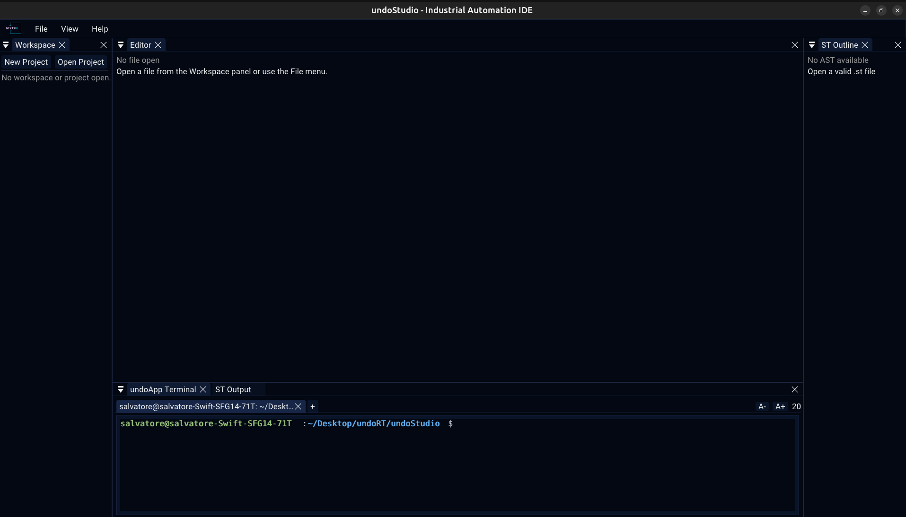

|
undoStudio
The IDE of the undoRT ecosystem
|
|
undoStudio
The IDE of the undoRT ecosystem
|
The IDE of the undoRT ecosystem: an open development environment for industrial automation, built as a framework plus independent undoApps instead of one monolithic program.
Each release is in CHANGELOG.md; the feature documentation is in docs/.

| Editor | One panel for every kind of file: Structured Text, JSON, C++ and plain text, each in its own tab. → docs/editor.md |
| Structured Text | IEC 61131-3 POU editing, split Variables/Body, methods, semantic colouring, outline, compilation through st2cpp. → docs/structured-text.md |
| Autocomplete | Identifier, member and statement completion, signature help, and declaration jumps. → docs/autocomplete.md |
| Workspace | The file tree, drag to move, rename, delete, and new POUs and folders. → docs/workspace.md |
| JSON | Configuration as editable text, everything else as a browsable tree. → docs/json.md |
| Projects | Open and create a project, and its .undoProject/ descriptor. → docs/projects.md |
| Recent | Recent projects (Ctrl+R) and recent files (Ctrl+P), both remembered between runs. → docs/recent.md |
| Output | Build and validation messages with severity filters and search, and the generated ST. → docs/output.md |
| Terminal | An embedded shell in a tab of its own. → docs/terminal.md |
| UndoApps | The plugin model, and how to write one. → docs/undoapps.md |
| OS | Linux (developed and tested on Ubuntu 24.04) |
| Compiler | C++17, GCC 13 or Clang 15 and later |
| CMake | 3.15 or later |
| GPU | OpenGL 3.x, through GLFW |
Debian and Ubuntu:
Everything else is a submodule — GLFW, Dear ImGui, implot, ImGuiColorTextEdit, st2cpp, stb, tinyfiledialogs, nlohmann_json — and is built from source.
git submodule update --init --recursive if the clone was not recursive.
| Option | Default | Effect |
|---|---|---|
BUILD_EDITOR_APP | ON | Build the Editor undoApp, the ST/JSON/text/C++ environment |
BUILD_TERMINAL_APP | ON | Build the Terminal undoApp |
BUILD_DEMO_APP | OFF | Build the Demo undoApp |
USE_SYSTEM_GLFW | OFF | Use the system GLFW instead of the bundled one |
ENABLE_IMGUI_DOCKING | ON | Build Dear ImGui with docking support |
USE_TINYFILEDIALOGS | OFF | Use tinyfiledialogs for native file dialogs |
Start it from the repository root, because fonts, icons and themes are opened by relative path:
The binary, the core library and the undoApps are written next to resources/, which is how the IDE finds them at run time: undoStudio, libundoStudioCore.so and plugins/*.so. cmake --install puts them in share/undoStudio, and that directory has to be the working directory too.
Compile shells out to st2cpp, which is a submodule but is built separately:
That leaves the binary at build/st2cpp/st2cpp. A st2cpp on PATH is preferred, and the path actually used is printed in the ST Output panel. A missing transpiler is reported plainly and nothing else stops working.
All three suites are headless: no GPU, no display.
The Editor and Terminal suites need the project built, because they link against libundoStudioCore.so, libimgui.a and libimplot.a.
undoStudio owns the application lifecycle, the window, the ImGui framework and the project on disk. It implements no domain functionality: an undoApp that has to be linked into the executable is an undoApp that cannot be shipped separately.
See docs/undoapps.md for the model and for the undoRT modules the IDE is meant to sit in front of.